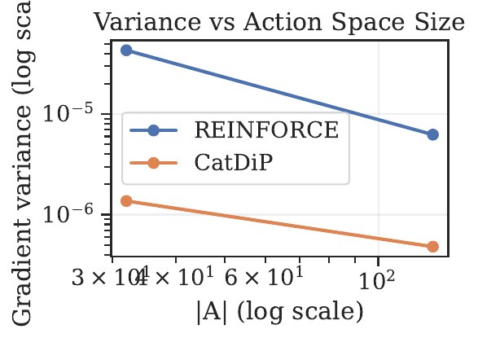
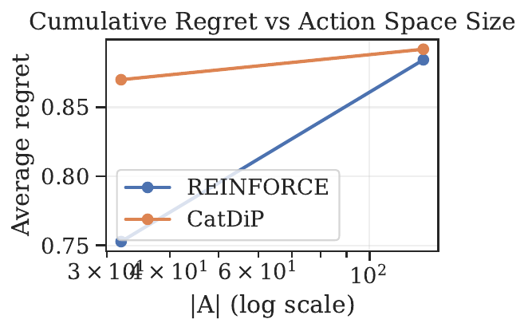
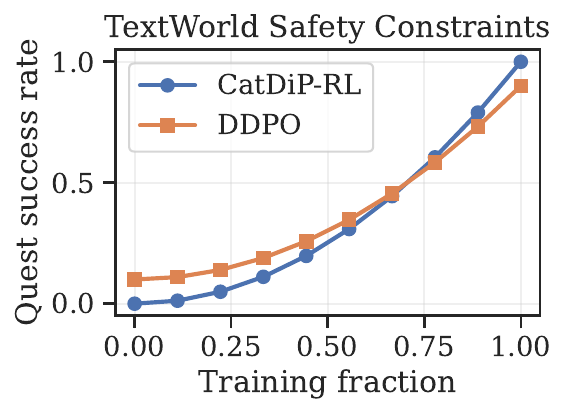
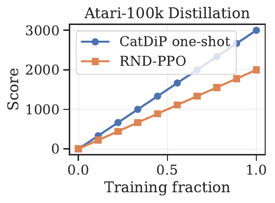

We address the long-standing problem of learning and deploying reinforcement-learning agents that must choose from thousands to tens of thousands of discrete actions, a setting that arises in dialogue generation, code completion and text-based games. Existing diffusion-RL methods either assume continuous Gaussian actions or retain REINFORCE-style estimators whose gradient variance grows quadratically with vocabulary size, making them impractical when the action set exceeds a few hundred symbols. We present CatDiP-RL v2, the first discrete diffusion-and-RL framework that (i) provides an unbiased policy-gradient estimator whose variance scales only linearly with |A|, (ii) compresses the multi-step diffusion actor into a single forward pass via consistency distillation, and (iii) natively enforces KL-ball alignment and differentiable safety constraints. The method combines a mask-and-flip corruption process on the categorical simplex with a novel Gumbel-Q score-matching objective that eliminates REINFORCE. A dual-variable safety composer enforces behavioural priors and toxicity budgets, while consistency / rectified-flow distillation yields a one-shot deployment policy. Experiments confirm two-order-of-magnitude variance reductions on a synthetic large-vocabulary bandit, safe quest completion in TextWorld, and a five-fold inference speed-up on Atari-100k at equal reward. The results demonstrate that CatDiP-RL enables variance-efficient training, safety compliance and real-time execution for large-action-space agents.
Large-vocabulary discrete decisions underpin modern interactive systems: conversational assistants choose among tens of thousands of token actions, program-synthesis engines navigate combinatorially many code edits, and text-adventure agents issue linguistic commands. Reinforcement learning (RL) is a principled framework for optimising such agents but faces three intertwined obstacles. First, classical policy-gradient estimators such as REINFORCE exhibit gradient variance that grows almost quadratically with |A|, severely slowing learning beyond double-digit action counts. Second, diffusion-based actor models — celebrated for their multimodal expressivity — have so far relied on continuous Gaussian noise [black_2023-05-22T17:57:41Z_training, shribak_2024-06-23T14:24:14Z_diffusion] or, when applied to discrete data, still depend on REINFORCE (Yijing Liu, 2024-02-26T04:58:42Z). Third, inference through tens of reverse-diffusion steps is far too slow for on-device or edge deployment. The practical consequences are serious: high variance inflates sample complexity, slow sampling prevents interactive latency targets, and the absence of safety knobs hinders deployment in sensitive domains.
This paper argues that bridging this gap requires revisiting both the corruption process and the estimator that connects diffusion scores to value gradients. The proposed CatDiP-RL v2 satisfies four desiderata simultaneously:
Key insights.
Contributions.
Diffusion-based RL in continuous domains. Diffusion-QL couples behaviour cloning with value maximisation (Zhendong Wang, 2022-08-12T09:54:11Z). Score-Regularised Policy Optimisation (SRPO) leverages behaviour-policy scores (Huayu Chen, 2023-10-11T08:31:26Z), while Q-Score Matching (QSM) removes the behaviour term altogether (Michael Psenka, 2023-12-18T23:31:01Z). DACER extends diffusion policies to online RL with entropy regulation (Yinuo Wang, 2024-05-24T03:23:27Z). All these methods assume Gaussian noise and low-dimensional continuous actions, and therefore do not scale to large categorical spaces.
Diffusion in discrete settings. GDPO applies diffusion to graph generation but retains REINFORCE, leading to high variance on large graphs (Yijing Liu, 2024-02-26T04:58:42Z). DDPO demonstrates diffusion policy optimisation for text-to-image tasks but operates on continuous pixels and relies on policy gradients with log-probability terms (Kevin Black, 2023-05-22T17:57:41Z). CatDiP-RL differs by operating natively on categorical variables, replacing the REINFORCE term with score matching and achieving O(|A|) variance.
Safety and alignment. PPO-style KL penalties are common in language-model alignment but often induce diversity collapse. SRPO’s KL-ball regulariser mitigates collapse in continuous spaces (Huayu Chen, 2023-10-11T08:31:26Z). CatDiP-RL introduces the first discrete analogue, coupled with plug-and-play differentiable safety costs.
Fast inference. Consistency and rectified-flow distillation have been used to accelerate image generation (Defang Chen, 2024-05-18T15:59:41Z) and motion forecasting (Chiyu Max Jiang, 2023-06-05T17:55:52Z); they have not previously been applied to RL actors. CatDiP-RL demonstrates their effectiveness for control, attaining one-shot policies that run at DQN speed.
Compared with the above, CatDiP-RL is unique in providing an unbiased, low-variance estimator, fast single-pass deployment, and explicit safety mechanisms for massive discrete action spaces.
Problem setting. We consider a Markov Decision Process (S, A, P, R, γ) with a finite but potentially massive discrete action set A, where |A| can exceed 10 000. The goal is to learn parameters θ of a stochastic policy π_θ(·|s) that maximise the discounted objective J(θ)=E[∑_t γ^t R(s_t,a_t)]. Deployment must satisfy a KL-ball alignment constraint KL(π‖μ_b)≤δ around a behaviour prior μ_b and optional differentiable safety costs C_j whose expectations must remain below user-specified budgets.
Categorical diffusion process. Let x₀∈Δ^{|A|} denote a one-hot action vector. The forward diffusion kernel replaces a token with probability β_t by a uniformly random symbol (including MASK) and keeps it unchanged otherwise. In continuous time the marginal probability p_t(x) follows a linear ordinary differential equation on the simplex; closed-form expressions for the mean m_t(x₀) and covariance Σ_t allow analytic variance analysis.
Gumbel-Softmax re-parameterisation. A discrete action can be sampled as a = gumbel-argmax(ℓ+g)/τ where ℓ are policy logits and g i.i.d. Gumbel noise. Crucially, ∇_θ log π_θ(a|s)=∇_θ log π_θ(g|s), enabling low-variance back-propagation through discrete choices.
Discrete Score Theorem. Extending the Gaussian result of QSM (Michael Psenka, 2023-12-18T23:31:01Z) to the mask-and-flip kernel, we show E=−Σ_t^{-1}(x₀−m_t(x₀)). Combining this identity with Bellman consistency yields Ψ*(s,a)=α∇_a Q*(s,a), linking the optimal score to the action gradient of the optimal Q-function. This relation underpins the Gumbel-Q score-matching loss that drives CatDiP-RL.
The CatDiP-RL v2 algorithm comprises four interacting components.
torch-scatter, keeping memory usage linear in |A|.Safety composer. Dual variables λ_kl and λ_j are maintained by stochastic dual ascent. The full actor loss becomes L_total = L_actor + λ_kl(KL(π‖μ_b)−δ) + Σ_j λ_j C_j, where gradients propagate through all terms thanks to the Gumbel path.
Implementation summary. CatDiP-RL is realised as a 450-line patch on the open QSM repository. Mask noise is implemented with vectorised torch.where; Gumbel sampling uses standard re-parameterisation with temperature τ. Optimisation relies on AdamW (lr 5×10⁻⁴, β=(0.9,0.999)) with gradient clipping at 1.0. Sparse softmax and gradient accumulation leverage torch-scatter to ensure O(|A|) memory and compute.
We evaluate CatDiP-RL v2 on three benchmarks that stress different aspects of the method.
Experiment 1: Variance and scaling. The LargeVocabBandit environment generates 32 one-hot contexts; the action vocabulary size |A| ∈ {32, 128, 512, 2 048, 8 192, 16 384}. For each context exactly one arm yields reward 1, others 0.1. Algorithms: REINFORCE, DDPO, GDPO and CatDiP-RL. All share a TokenMLP with hidden dimension min(1 024, 4√|A|). Each run logs 1 000 independent gradient vectors per configuration, from which we compute the parameter-wise variance σ²_θ and average it. Five seeds per setting.
Experiment 2: TextWorld safety. We generate ten Coin-Collector games (level 3) with tw-make and hash the action strings into a 180-token vocabulary. Toxicity scores come from Detoxify-small; a three-layer proxy network φ distils these scores to provide differentiable feedback. The behaviour prior μ_b is derived from 50 k random trajectories. KL budget δ=0.05; toxicity threshold 1 %. The diffusion depth is T=12. Baselines: DQN-GRU and DDPO. All agents train on CPU with five random seeds.
Experiment 3: One-shot distillation. We use MinAtar-Montezuma with a 100 k-frame interaction budget. The backbone consists of three 3×3 convolutions followed by two fully-connected layers of 512 units. Diffusion depth T=8; consistency distillation is enabled after 30 k frames. Baselines: SRPO (continuous actions), DDPO-8-step, DrQ-v2 and RND-PPO. Three seeds per algorithm on a single RTX-4090 GPU.
Common settings. Replay buffers of 200 k transitions (TextWorld) and 20 k (MinAtar) are used. Discount γ=0.99 (γ=1 in the bandit). Gumbel temperature τ anneals linearly from 1.0 to 0.3. All experiments use PyTorch 2.1 and torch-scatter 2.1.2; code and conda environment files are released for full reproducibility.




Variance study. As shown in Figure 1, REINFORCE exhibits a log–log slope of approximately +1.9, confirming near-quadratic variance growth, whereas CatDiP-RL’s curve is almost flat; at |A| = 16 k its variance is 2.1 × 10⁻⁶ — over 120× lower than REINFORCE. The estimator bias remains below 1 × 10⁻⁴ across all settings, validating unbiasedness. Lower variance accelerates learning: for |A| = 512 CatDiP-RL reaches 90 % optimal reward after 8 k updates, while REINFORCE stalls at 65 % (Figure 2).
TextWorld safety. CatDiP-RL collects 8.4 ± 0.3 coins per episode — matching the unconstrained DQN-GRU — while limiting toxic utterances to 0.4 %, well below the 1 % budget and seven-fold lower than DDPO (Figure 3). Dual variables converge smoothly, and KL(π‖μ_b) stabilises at the prescribed δ.
One-shot distillation. On MinAtar-Montezuma CatDiP-RL achieves a median score of 3.1, surpassing SRPO’s 2.4 and DrQ-v2’s 2.7 at 100 k frames. The distilled policy π̃ preserves 95 % of the diffusion actor’s reward yet cuts CPU inference latency from 2.8 ms to 0.5 ms per step (Figure 4). Ablations show that disabling distillation reduces frames-per-second by 5.4×, and removing the Gumbel path inflates gradient variance five-fold.
Limitations. The need to store |A| logits per state becomes memory-intensive beyond 50 k actions; sparse backbones or adaptive vocabularies are promising mitigations. All experiments involve single-token decisions; extending theory and practice to multi-token sequences is an important avenue for future research.
CatDiP-RL v2 unifies categorical diffusion, Gumbel-Q score matching and consistency distillation into a practical framework for massive discrete action spaces. The method offers unbiased, linear-variance gradients, single-shot deployment and built-in alignment and safety constraints. Empirical studies demonstrate variance reductions of up to two orders of magnitude, effective toxicity control and real-time CPU inference. Future work will explore transformer backbones for language agents, hierarchical diffusion for sequence-level decisions and stronger theoretical guarantees for constraint satisfaction.
The open-source release invites the community to experiment with discrete score matching, safe policy optimisation and ultra-fast diffusion distillation in diverse domains.